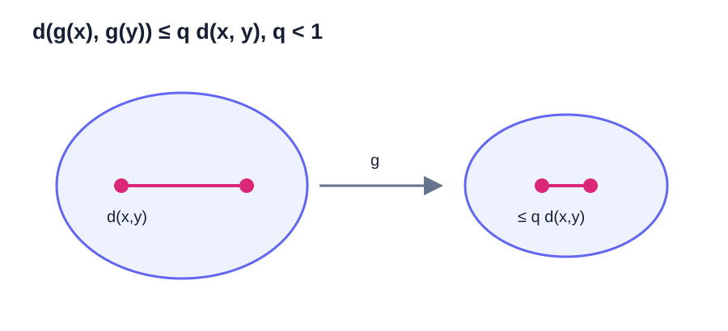

Fixed Points & Contractions
不动点迭代（fixed-point iteration）把方程求解写成反复应用一个映射。本章严格区分不动点的存在性、唯一性和算法收敛性，并完整证明巴拿赫不动点定理（Banach fixed-point theorem）。
不动点与皮卡迭代（Picard Iteration）
若映射 \(g:X\to X\) 满足
则 \(x^*\) 称为不动点（fixed point）。皮卡迭代为
方程 \(f(x)=0\) 可通过 \(g(x)=x-\eta f(x)\) 改写为不动点方程（fixed-point equation），但不同 \(\eta\) 会产生不同的收敛行为。
存在性、唯一性和迭代收敛性是三个不同命题。\(g(x)=x^2\) 有两个不动点 \(0,1\)；从 \(x_0=1/2\) 出发趋于 \(0\)，从 \(x_0=3/2\) 出发发散。
度量空间与完备性
度量（metric）\(d:X\times X\to[0,\infty)\) 满足：
- \(d(x,y)=0\iff x=y\)；
- \(d(x,y)=d(y,x)\)；
- \(d(x,z)\le d(x,y)+d(y,z)\)。
在 \(\mathbb R^n\) 中，\(d(x,y)=\|x-y\|_2\) 是常用距离。
在一般度量空间中，\(x_k\to x\) 的含义是：对每个 \(\varepsilon>0\)，存在 \(N\)，使 \(k\ge N\) 时 \(d(x_k,x)<\varepsilon\)。数列是柯西数列，表示：对每个 \(\varepsilon>0\)，存在 \(N\)，使 \(m,n\ge N\) 时 \(d(x_m,x_n)<\varepsilon\)。
度量空间（metric space）\((X,d)\) 称为完备的（complete），如果每个柯西数列都收敛到 \(X\) 中的点。开区间 \((0,1)\) 不完备，因为
的每一项都属于 \((0,1)\)，它是柯西数列，但极限 \(0\) 不在该区间。
命题。 欧几里得空间 \(\mathbb R^n\) 完备；完备度量空间的每个闭子集在继承距离下仍然完备。
这里采用闭集的序列定义：\(F\subset X\) 是闭集，当且仅当 \(F\) 中每个收敛数列的极限仍属于 \(F\)。在度量空间中，这与“补集是开集”的定义等价。
闭集两种定义等价
若 \(F^c\) 开而 \(x_k\in F\) 收敛到 \(x\notin F\)，则存在 \(r>0\) 使开球 \(B(x,r)\subset F^c\)。收敛性却保证充分大的 \(k\) 有 \(x_k\in B(x,r)\)，矛盾。
反过来，若 \(F\) 包含其中收敛数列的极限，而 \(F^c\) 不是开集，则存在 \(x\in F^c\)，使每个 \(B(x,1/k)\) 都含有某个 \(x_k\in F\)。这样 \(x_k\to x\)，却有 \(x\notin F\)，同样矛盾。
证明
若 \((x_k)\) 是 \(\mathbb R^n\) 中的柯西数列，则每个坐标列都是实数柯西数列。由第零章采用的实数完备性，每个坐标都收敛。把各坐标极限组成 \(x\in\mathbb R^n\)，有限个坐标误差同时趋于零，故 \(\|x_k-x\|_2\to0\)。所以 \(\mathbb R^n\) 完备。
再设 \(F\) 是完备空间 \(X\) 的闭子集，\((x_k)\) 是 \(F\) 中的柯西数列。它也是 \(X\) 中的柯西数列，因此收敛到某个 \(x\in X\)。闭集包含其中所有收敛序列的极限，故 \(x\in F\)。所以 \(F\) 完备。
自映射与压缩映射

\(g:X\to X\) 是自映射（self-map），表示迭代不会离开 \(X\)。若存在 \(q\in[0,1)\) 使对所有 \(x,y\in X\)，
则 \(g\) 是压缩映射（contraction mapping），\(q\) 是压缩因子（contraction factor）。
命题。 在实区间 \(I\) 上，若 \(g\) 可微且
则 \(|g(x)-g(y)|\le q|x-y|\) 对所有 \(x,y\in I\) 成立。
证明
对 \(x\ne y\)，中值定理给出位于两点之间的 \(\xi\)，使
取绝对值得所需不等式；\(x=y\) 时结论显然成立。
仅有导数界还不够，必须同时验证 \(g(I)\subseteq I\)，才能把迭代限制在同一个完备集合中。
巴拿赫不动点定理（Banach Fixed-Point Theorem）
定理。 设 \((X,d)\) 是非空完备度量空间，\(g:X\to X\) 是压缩映射，压缩因子为 \(q<1\)。则：
- \(g\) 在 \(X\) 中存在唯一不动点 \(x^*\)；
- 对任意 \(x_0\in X\)，皮卡迭代 \(x_{k+1}=g(x_k)\) 收敛到 \(x^*\)；
- 具有可计算的先验与后验误差界。
证明
第一步：控制相邻迭代点之差。 由压缩性反复使用同一不等式，
第二步：证明迭代列是柯西数列。 对 \(m>n\)，由三角不等式，
右侧随 \(n\to\infty\) 趋于零，因此对任意 \(\varepsilon>0\)，当 \(m>n\) 足够大时都有 \(d(x_m,x_n)<\varepsilon\)。
第三步：证明存在性。 \(X\) 完备，所以存在 \(x^*\in X\) 使 \(x_n\to x^*\)。压缩映射自动连续，因为
因而
第四步：证明唯一性。 若 \(x^*,y^*\) 都是不动点，则
移项得到 \((1-q)d(x^*,y^*)\le0\)。由于 \(1-q>0\) 且距离非负，只能有 \(d(x^*,y^*)=0\)，即 \(x^*=y^*\)。
误差上界
推论。 在巴拿赫不动点定理的条件下，先验误差界（a priori bound）与后验误差界（a posteriori bound）分别为
证明
巴拿赫定理的证明已经得到：对 \(m>n\)，
由三角不等式可得
上式是度量版反三角不等式；它由三角不等式分别写成 \(d(x_m,x_n)\le d(x_m,x^*)+d(x^*,x_n)\) 和交换 \(x_m,x^*\) 后合并得到。因而令 \(m\to\infty\)，便得
把同一估计的起点改为 \(x_{n-1}\)，则
第一式适合预估迭代次数，第二式适合根据已经观察到的相邻差决定停止。
若要求先验误差界不超过 \(\varepsilon\)，需要
当 \(0<q<1\) 时，\(\log q<0\)，故
最后向上取整。\(q=0\) 时 \(g\) 是常值映射，一步到达不动点，应单独处理。
一维完整示例
设
自映射（Self-map）。 对 \(x\in I\)，\(|g(x)|\le1/2\)，所以 \(g(I)\subseteq I\)。
压缩性（Contraction）。 \(g'(x)=-(1/2)\sin x\)，所以 \(|g'(x)|\le1/2\)。可取 \(q=1/2\)。
完备性（Completeness）。 \(I\) 是 \(\mathbb R\) 的非空闭子集，因此完备。
巴拿赫定理保证 \(I\) 中存在唯一不动点，且从任意 \(x_0\in I\) 出发收敛。若 \(x_0=0\)，则 \(x_1=1/2\)，先验误差界为
要保证误差严格小于 \(10^{-8}\)，取 \(n=27\) 即可，因为 \(2^{-27}<10^{-8}\)。
不满足压缩条件时的存在性
定理。 若 \(g:[a,b]\to[a,b]\) 连续，则至少存在一个不动点。
证明
定义
由于 \(g\) 把 \([a,b]\) 映入自身，\(g(a)\ge a\) 且 \(g(b)\le b\)，所以 \(h(a)\ge0\)、\(h(b)\le0\)。函数 \(h\) 连续，由介值定理，存在 \(c\in[a,b]\) 使 \(h(c)=0\)，即 \(g(c)=c\)。
这个结论只保证存在，不保证唯一，也不保证皮卡迭代收敛。例如 \(g(x)=1-x\) 将 \([0,1]\) 映回自身且连续，唯一不动点为 \(1/2\)；但除非 \(x_0=1/2\)，迭代会在 \(x_0\) 与 \(1-x_0\) 之间振荡。
不动点迭代的局部收敛性
定理。 设 \(g(x^*)=x^*\)、\(g'\) 在 \(x^*\) 附近连续且 \(|g'(x^*)|<1\)，则 \(x^*\) 是局部吸引不动点。
证明
可取 \(q\) 满足
由连续性，存在半径 \(r>0\)，使 \(|x-x^*|\le r\) 时 \(|g'(x)|\le q\)。由中值定理，
因此闭区间 \([x^*-r,x^*+r]\) 是不变集（invariant set），且 \(g\) 在该区间上是压缩映射。巴拿赫定理给出从该区间内任意初值出发的收敛性。
若 \(|g'(x^*)|>1\)，不动点通常是排斥的（repelling）。若 \(|g'(x^*)|=1\)，一阶判据没有结论，必须检查更高阶项。
向量压缩映射
定理。 设 \(D\subset\mathbb R^n\) 非空、闭且凸，\(g\) 定义在包含 \(D\) 的开集上并连续可微，且 \(g(D)\subset D\)。若欧几里得诱导范数下
则 \(g\) 是压缩映射。
证明
任取 \(x,y\in D\)。若 \(g(x)=g(y)\)，结论显然成立。以下设 \(g(x)\ne g(y)\)，并令
凸性保证线段 \(y+t(x-y)\) 留在 \(D\)。定义单变量实函数
由链式法则，
对 \(\phi\) 使用第零章的单变量中值定理，存在 \(\xi\in(0,1)\) 使
这里使用了柯西－施瓦茨不等式、\(\|u\|_2=1\) 和诱导范数的相容性。因此 \(g\) 是压缩映射。
只知道 \(\rho(J_g(x^*))<1\) 是局部线性化信息，不能直接推出整个区域上的一致压缩性。
二维完整示例
在闭方形 \(D=[0,1]^2\) 上定义
先验证自映射条件。对 \((x,y)\in D\)，
故 \(g(D)\subset D\)。它的雅可比矩阵（Jacobian）是常矩阵
因此欧几里得算子范数（Euclidean operator norm）为
\(D\) 是 \(\mathbb R^2\) 的闭子集，所以在欧几里得度量（Euclidean metric）下完备。巴拿赫定理因而保证 \(g\) 在 \(D\) 内有唯一不动点，且从 \(D\) 内任意初值出发的皮卡迭代都收敛。
固定点方程等价于
解得
若取 \(z_0=(0,0)^T\)，则 \(z_1=(0,1/2)^T\)，所以 \(\|z_1-z_0\|_2=1/2\)。先验误差界为
要保证该上界不超过 \(\varepsilon\)，只需
取 \(\varepsilon=10^{-4}\) 与 \(q=1/(2\sqrt2)\)，右端约为 \(8.61\)，故 \(n=9\) 次迭代足够。这一例子完整展示了二维情形中的自映射、雅可比矩阵范数（Jacobian norm）、存在唯一性、误差上界和迭代次数。
不动点迭代格式的设计
同一方程可以产生不同迭代。对 \(f(x)=x^2-2=0\)，取
在正根 \(\alpha=\sqrt2\)，
由本章已证明的局部收敛定理，下面的不等式是一个便于验证的充分条件：
即 \(0<\eta<1/\sqrt2\)。它不是必要条件：当 \(|g'(x^*)|=1\) 时一阶判据没有结论，例如 \(g(x)=x-x^3\) 在 \(x^*=0\) 满足 \(g'(0)=1\)，但足够接近零的非零初值仍收敛到零。当 \(\eta=1/(2\sqrt2)\) 时导数为零，线性误差项消失，局部速度可能提高。算法设计的核心正是调整误差映射，而不只是保持相同不动点。
精确误差与定理上界
考虑
固定点为 \(x^*=1/3\)，且
要使 \(|e_n|<10^{-5}\)，需 \(4^n>1/(3\times10^{-5})\)，所以 \(n=8\) 足够。
巴拿赫先验界使用 \(q=1/4\)、\(|x_1-x_0|=1/4\)：
在这个线性例子中，通用界恰好等于精确误差。
练习
- 证明 \(g(x)=x/4+3\) 在 \(\mathbb R\) 上是压缩映射，并求唯一不动点。
- 说明 \(g(x)=\cos x\) 为什么不能直接在整个 \(\mathbb R\) 上使用统一 \(q<1\) 的导数界。
- 已知 \(q=1/3\)、\(|x_1-x_0|=2\)，计算 \(|x_4-x^*|\) 的先验上界。
- 给出有唯一不动点但皮卡迭代不收敛的连续自映射。
- 设 \(g:\mathbb R^2\to\mathbb R^2\) 为 \(g(x)=Bx+c\)。证明它在某诱导范数下为压缩映射时，结论与线性迭代章节一致。
第一步提示
第 1 题计算导数上界。第 2 题检查 \(|\sin x|\) 是否能被某个严格小于 1 的统一常数控制。第 3 题直接代入先验界。第 4、5 题先分别验证自映射和距离缩小。
答案。 第 1 题压缩因子 \(1/4\)，固定点 \(4\)。第 3 题上界为 \(1/27\)。第 4 题可取 \(g(x)=1-x\) 于 \([0,1]\)。